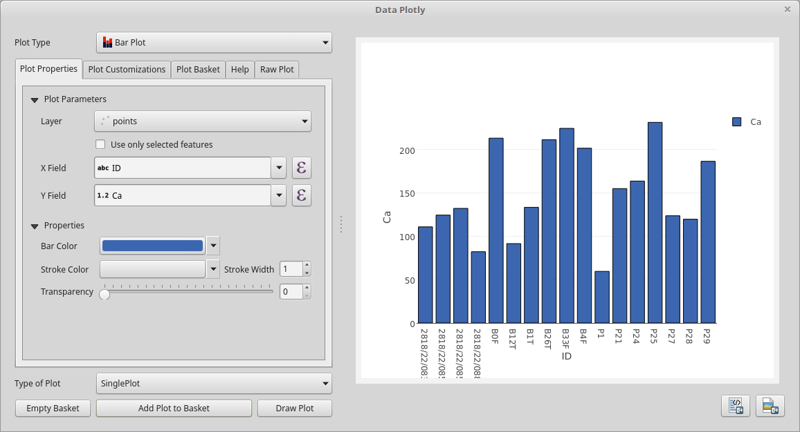

Bar Plot¶
Here you will find the guide to every parameter of the bar plot. If you need more generic information please see DataPlotly Basic Usage.
Plot Properties¶
Layer: the combobox will display all the vector layers loaded in QGIS
X: the X field
Y Field: the Y field
Bar Color: color of the bar
Data Defined Override: you can add an Expression to define the size of the marker.
If activated other options are available: Color Scale, Visible and Invert Color.
Stroke Color: border color
Stroke Width: the width of the border
Transparency: transparency level of the bar
Plot Customizations¶
Show Legend: show the legend of the current plot
Horizontal Legend: check if you want to have an horizontal legend
Plot Title: the plot title
Legend Title: the title of the legend
X Label: X label text
Y Label: Y label text
Invert X Axis: check if you want to invert the ordering of the x axis
Invert Y Axis: check if you want to invert the ordering of the y axis
Bar Orientation: the orientation of the bar, either Horizontal or Vertical
Bar Mode: this option is handy if you have more data to plot:

{kind=link}
{kind=link}
{kind=link}